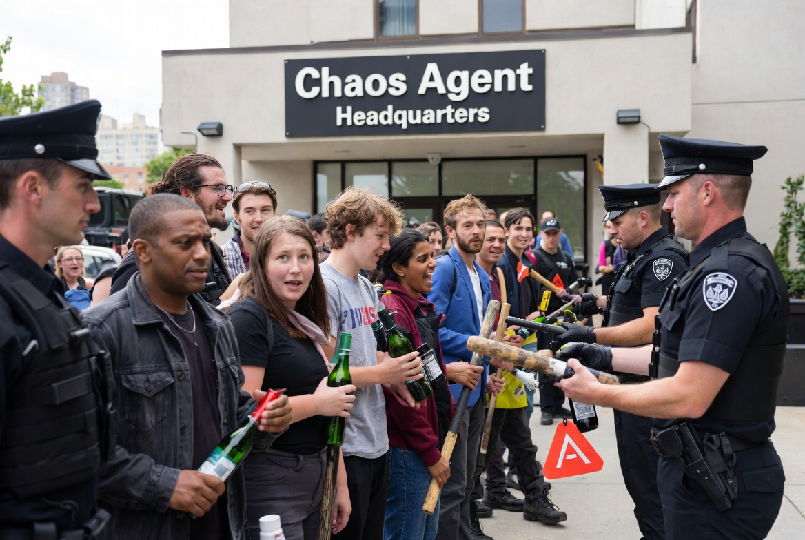

Nation’s Largest Employer Now “Freelance Chaos Agent,” Overtakes Healthcare
With benefits, flexible hours, and same-day payouts, paid destabilization becomes America’s fastest-growing career path.

WASHINGTON, D.C. — The U.S. economy reached a historic milestone Tuesday as “Freelance Chaos Agent” officially surpassed healthcare as the nation’s largest employment sector, according to a jubilant press release from the Department of Managed Instability.
“Americans are finally getting back to work,” said Labor Secretary Diane Horkel, gesturing proudly to a chart showing explosive growth in arson-adjacent roles, entry-level chanting positions, and mid-career brick deployment specialists. “Whether you’re burning it down or defending it, there’s never been more opportunity to participate.”
Workers cited flexibility as a major draw. “I did a peaceful march from 9 to 11, flipped three trash cans by noon, and by 2 p.m. I was counter-protesting myself for time-and-a-half,” said Denver resident Kyle Madsen, who recently upgraded to ChaosPlus Gold status. “The benefits are insane. Dental, vision, and a weekly stipend for morally confusing signage.”
Major platforms like RiotRabbit and TaskRage now offer surge pricing during peak outrage windows, with bonuses for participants willing to express contradictory beliefs within the same news cycle. Corporate clients can select from pre-built packages, including “Organic Grassroots Fury” and the popular “Spontaneous National Breakdown (Family Friendly).”
President Donald Trump addressed the phenomenon late Tuesday, offering a theory he described as “very obvious if you’re smart, which I am.”
“Look, a lot of these people, they’re not real protesters, okay? They’re paid. Everyone knows it. Maybe not you, but a lot of people know it,” Trump said, tapping the podium as if it might confirm the point. “They get checks. Big checks. Probably from the Obamas—could be both of them, we don’t know, they don’t tell you, the news never tells you. Very dishonest. Very, very dishonest.”
He paused, briefly losing the thread.
“And you see the same faces. I’m not saying I recognize every face, but I recognize the idea of the face. Same energy. They’re out there yelling, screaming, very nasty, very coordinated—too coordinated, frankly. Nobody organizes like that unless they’re being paid. Or told. Or both.”
Administration officials clarified that ordinary dissent remains legal, provided it is first registered with the Ministry of Acceptable Concerns, pre-cleared through the Department of Patriotic Tone, and performed silently at least three miles from cameras, roads, windows, children, veterans, flags, commerce, weather, or anyone capable of feeling disrespected.
Industry analysts say the sector’s explosive rise reflects a deeper national need. In an age of constant suspicion, every crowd now carries the reassuring possibility of payroll. No one has to believe anything anymore. They only have to submit an invoice.
At press time, the Dow Jones had surged 400 points on news that civil unrest would now be bundled into quarterly earnings guidance.